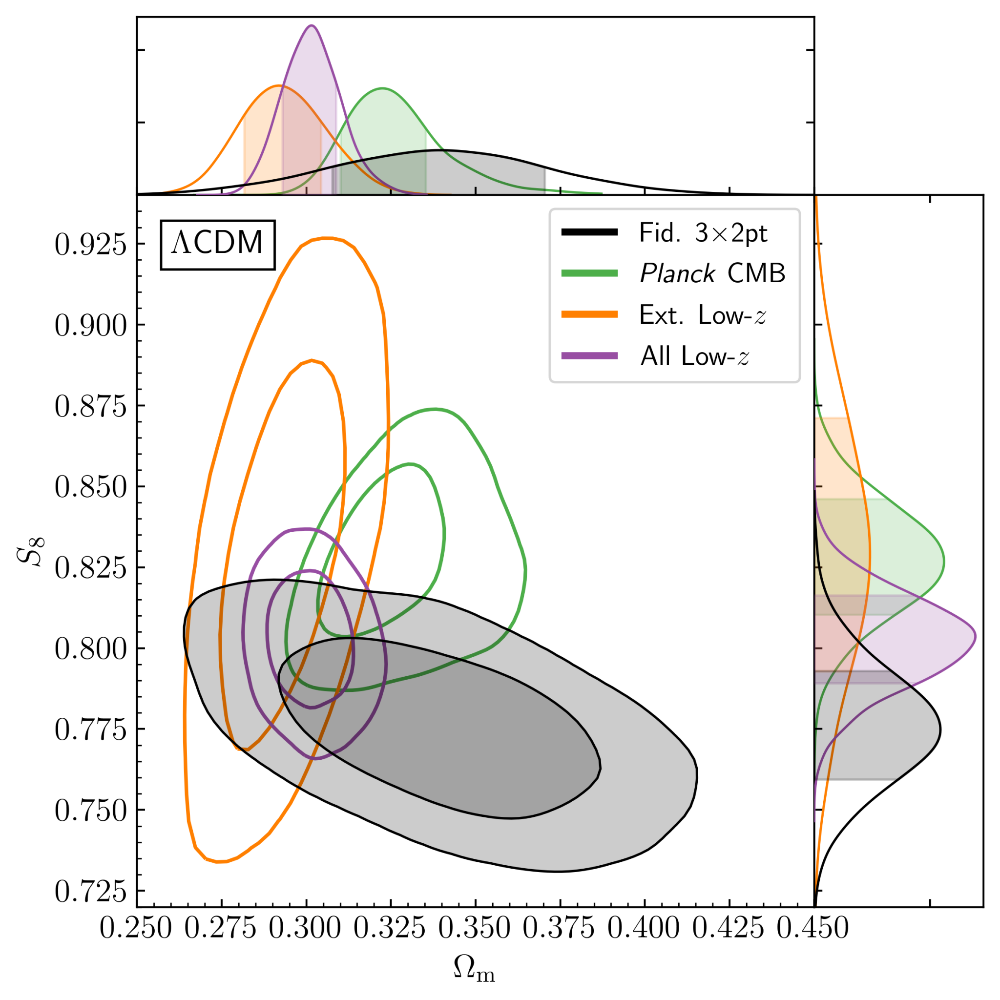
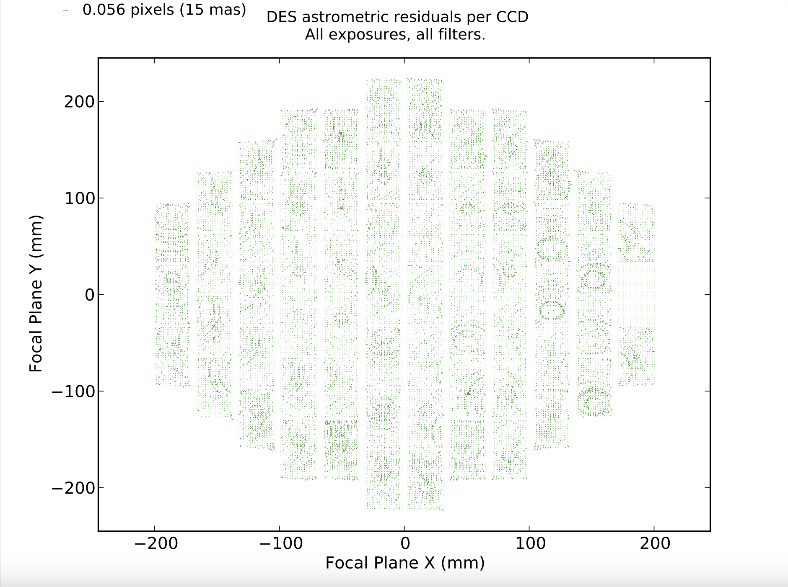
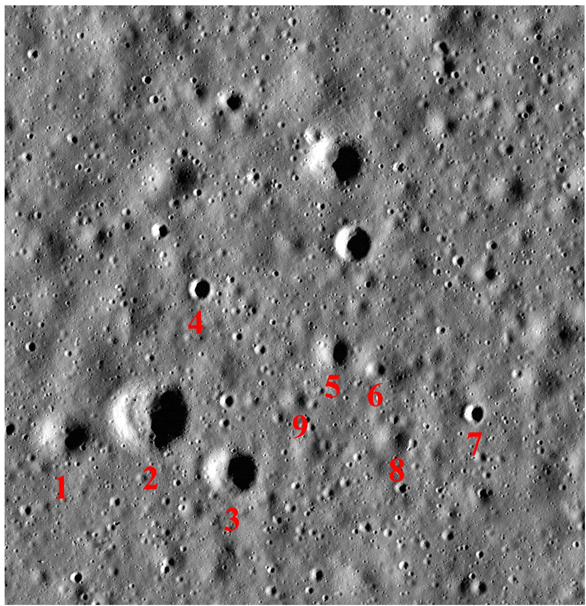

Skip to main content

Research Interests
Cosmology
My research in cosmology is centered on understanding the nature of dark energy, the mysterious force driving the accelerated expansion of the universe. I am an active member of several major galaxy survey collaborations, including the Dark Energy Survey (DES), the Hyper Suprime-Cam (HSC) survey, and the Rubin LSST Dark Energy Science Collaboration (DESC). These collaborations are key to probing the large-scale structure of the universe and testing cosmological models. My work involves both the analysis of observational data and the development of theoretical models that can provide insights into the underlying physics of dark energy.

DESY3 cosmological constraints from weak lensing and clusters.
Weak Lensing Systematics
Weak gravitational lensing is a powerful tool for studying the distribution of dark matter in the universe. However, it is also highly sensitive to systematic errors, which can bias our measurements. My research focuses on characterizing and mitigating these systematics to improve the accuracy of weak lensing measurements. This involves detailed studies of the instrumental effects and data analysis pipelines used in surveys like DES and HSC. I am also involved in the Rubin LSST DESC, where I contribute to the development of algorithms that will ensure the robustness of weak lensing studies with LSST.

Imprint of CCD tree rings on astrometric residuals in DECam.
Strong Lensing Simulations
Strong gravitational lensing provides a unique opportunity to study distant galaxies and the distribution of dark matter on small scales. My work in this area involves creating and analyzing simulations of strong lensing events, which can be used to test theoretical models and to prepare for future observations with the Rubin Observatory. I am a member of the Strong Lensing Collaboration within LSST DESC, where we are developing techniques to identify and study strong lensing systems in the vast LSST dataset.

Simulation of strong gravitational lensing events with different instruments using Skylens.
Instrumentation and detectors
I am deeply interested in the development and use of advanced sensors, including CCDs and near-infrared detectors, to tackle fundamental problems in cosmology, such as understanding dark matter and dark energy, as well as other key physics questions. I proposed and co-organized the Image Sensors for Precision Astronomy conference, which was held at SLAC/KIPAC in March 2024, bringing together experts to explore the latest advancements in sensor technology for astronomy.
Fully-depleted CCDs
I have been actively involved in the electro-optical testing and characterization of fully-depleted, back-illuminated CCDs for astronomical cameras, including the Dark Energy Camera (DECam) and the LSST Camera. These CCDs are critical for capturing high-precision images used in weak lensing and galaxy surveys. My work has focused on understanding and mitigating systematic errors in CCD performance, ensuring that these detectors meet the stringent requirements for cosmological experiments aiming to measure dark energy and dark matter. This experience has contributed to the success of large-scale surveys like the Dark Energy Survey (DES) and the Vera C. Rubin Observatory's Legacy Survey of Space and Time (LSST).
Skipper CCDs
Skipper CCDs are an innovative type of detector that allows for the precise measurement of very low levels of charge, making them ideal for applications in cosmology and particle physics. My research involves both the development and characterization of these detectors, as well as their application to scientific problems such as direct detection of dark matter and low-level light detection in astronomical observations. I work closely with teams developing these detectors and exploring their potential for use in future space missions and ground-based telescopes.
HxRG detectors for Roman and Euclid
Near-infrared (NIR) detectors are crucial for weak lensing science, especially in space-based missions like NASA's Roman Space Telescope and Euclid. These detectors, such as the HgCdTe-based Hawaii-XRG, are used to capture the subtle distortions of distant galaxy shapes caused by dark matter, known as cosmic shear. Precise measurements of these shapes are critical for understanding dark energy and the large-scale structure of the universe. However, systematic effects like the "brighter-fatter" effect, where brighter point sources appear larger due to charge redistribution between pixels, can bias weak lensing measurements. My work focuses on detailed calibration and correction of these systematic effects in NIR detectors to ensure the accuracy of cosmological inferences.
Community and Citizen Science
I am passionate about involving the public in scientific research, and I have led several community science projects. These include studies of the incidence angle and crater counting on planetary surfaces, as well as the formation of the solar system. Through these projects, volunteers are able to contribute to real scientific discoveries while learning about planetary science and the history of our solar system. My work in this area is part of a broader effort to democratize science and make it accessible to everyone, regardless of their background.

Effect of solar incidence angle on crater counting in MoonMappers CosmoquestX project.
Rubin Observatory: Calibration and Community Science
As part of my role at the Rubin Observatory, I am heavily involved in the calibration of the observatory's instruments and the development of tools and resources for the scientific community. This includes ensuring that the data produced by the observatory is accurate and reliable, as well as supporting scientists and citizen scientists who want to use Rubin data for their own research. My work in the Community Science Team is focused on building a vibrant, inclusive community of researchers who are equipped to make the most of the unprecedented data set that the Rubin Observatory will produce.
Publications
More than 410 publications, including those as a builder of the Dark Energy Survey.
Citations: 40020.
h-index:96.
i10-index:373
Complete list of publications
Lead Author Publications
- Plazas Malagón, A.A., et al. Spot-based measurement of the brighter-fatter effect on a Roman Space Telescope H4RG detector and comparison with flat-field data, Journal of Instrumentation, (2024)
- Plazas Malagón, A.A., et al. Instrument Signature Removal and Calibration Products for the Rubin Legacy Survey of Space and Time, arXiv:2404.14516, (2024)
- Plazas Malagón, A.A., et al. Anti-Black racism workshop during the Vera C. Rubin Observatory virtual 2021 Project and Community Workshop, IOP eBook "And Astronomical Inclusion Revolution", (2024)
- Plazas, A.A., Image simulations for strong and weak gravitational lensing, Symmetry, 2020, 12(4), 494 (2020)
- Plazas, A.A., Meneghetti M., Maturi, M., & Rhodes, J. Image simulations for gravitational lensing with SkyLens, MNRAS, (2019)
- Plazas, A.A., Shapiro, C., Smith, R., Huff, E., & Rhodes, J. Laboratory measurement of the brighter-fatter effect in an H2RG infrared detector, Publications of the Astronomical Society of the Pacific, (2018)
- Plazas, A.A., Shapiro, C., Smith, R., Rhodes, J., & Huff, E. Nonlinearity and pixel shifting effects in HXRG infrared detectors, Journal of Instrumentation, Volume 12, Issue 04, pp. C04009 (2017)
- Plazas, A.A., Shapiro, C., Rhodes, J., Mandelbaum, R., Smith, R., & Kannawadi, A. The effect of detector nonlinearity on WFIRST PSF profiles for weak gravitational lensing measurements, Publications of the Astronomical Society of the Pacific, Volume 128, Number 968, (2016)
- Plazas, A.A., Bernstein, G., & Sheldon, E. On-sky measurements of the transverse electric fields' effects in the Dark Energy Camera CCDs, Publications of the Astronomical Society of the Pacific, Volume 126, issue 942, pp.750-760 (2014)
- Plazas, A.A., Bernstein, G., & Sheldon, E. Transverse electric fields' effects in the Dark Energy Camera CCDs, Journal of Instrumentation, Volume 9, April (2014)
- Plazas, A.A., & Bernstein, G. Atmospheric dispersion effects in weak lensing measurements, Publications of the Astronomical Society of the Pacific, 124:1113-1123, (2012)
Publications as Coauthor with Substantial Contributions
- Richardson, Plazas Malagón, A. A., Lebofsky, L., Grier, J., Gay, P., and Robbins, S. The CosmoQuest Moon Mappers Public Science Project: The Effect of Incidence Angle on the Lunar Surface Crater Distribution, The Open Journal of Astrophysics, Vol. 5, 2022
- Farahi, A., Gupta, R., Krawiec, C., Plazas, A.A., and Wolf, R. Astronomers’ and Physicists’ Attitudes toward Education and Public Outreach: A Programmatic Study of The Dark Energy Survey, Journal of STEM Outreach, Vol. 2, (2019)
- Bernstein, G., Armstrong, R., Plazas, A.A., et al. Astrometric calibration and performance of the Dark Energy Camera, Publications of the Astronomical Society of the Pacific, Volume 129, Number 977, (2017)
- Shapiro, C., Smith, R., Huff, E., Plazas, A.A., et al. Precision Projector Laboratory: Detector Characterization with an Astronomical Emulation Testbed, arXiv:1801.06599, (2018)
- Gruen, D., Plazas, A.A., Seitz, S., Characterization and correction of charge-induced pixel shifts in DECam, Journal of Instrumentation, Volume 10, Issue 05, (2015)
- Melchior, P., Plazas, A.A., et al. Weak-lensing mass calibration of redMaPPer galaxy clusters in Dark Energy Survey Science Verification data, MNRAS submitted, arXiv:1610.06890 (2016)
- Okura, Y., Plazas, A.A., et al. Spurious shear induced by the tree rings of the LSST CCDs, Journal of Instrumentation, Volume 10, Issue 08, (2015)
- Okura, Y., Plazas, A.A., Tamagawa, T., Consequences of CCD Imperfections for Cosmology Determined by Weak Lensing Surveys: From Laboratory Measurements to Cosmological Parameter Bias, The Astrophysical Journal, Volume 825, Issue 1, (2016)
- Jarvis, M., Plazas, A.A., et al. Dark Energy Survey Year 3 Results: Point-Spread Function Modeling, arXiv:2011.03409, (2020)
- Gatti, M., Plazas, A.A., et al. Dark Energy Survey Year 3 Results: Weak Lensing Shape Catalogue, arXiv:2011.03408, (2020)
- Jarvis, M., Plazas, A.A., et al. The DES Science Verification Weak Lensing Shear Catalogs, MNRAS, (2015)
- Becker, M., Plazas, A.A., et al. Cosmic Shear Measurements with DES Science Verification Data, arXiv:1507.05603 (2015)
- The Dark Energy Survey Collaboration, Plazas, A.A., et al. Cosmology from Cosmic Shear with DES Science Verification Data, arXiv:1507.05552 (2015)
- Melchior, P., Plazas, A.A., et al. Mass and galaxy distributions of four massive galaxy clusters from Dark Energy Survey Science Verification data, MNRAS submitted, arXiv:1405.4285 (2014)
- MacCrann, N., Plazas, A.A., et al. DES Y1 Results: Validating cosmological parameter estimation using simulated Dark Energy Surveys, arXiv:1803.09795 (2018)
- Abbott, B. P., Plazas, A.A., et al. The Dark Energy Survey Data Release 1, arXiv:1801.03181 (2018)
- Troxel, M., Plazas, A.A., et al. Dark Energy Survey Year 1 Results: Cosmological Constraints from Cosmic Shear, arXiv:1708.01538 (2017)
- The Dark Energy Survey Collaboration: Abbott, B. P., Plazas, A.A., et al. Dark Energy Survey Year 1 Results: Measurement of the Baryon Acoustic Oscillation scale in the distribution of galaxies to redshift 1, arXiv:1712.06209 (2017)
- The Dark Energy Survey Collaboration: Abbott, B. P., Plazas, A.A., et al. Dark Energy Survey Year 1 Results: A Precise H0 Measurement from DES Y1, BAO, and D/H Data, arXiv:1711.00403 (2017)
- The DES Collaboration: Abbott, T., Plazas, A.A., et al. Dark Energy Survey Year 1 Results: Cosmological Constraints from Galaxy Clustering and Weak Lensing, arXiv:1708.01530 (2017)
- Melchior, P., Plazas, A.A., et al. Crowdsourcing quality control for Dark Energy Survey images, arXiv:1511.03391 (2015)
- Diehl, H., Plazas, A.A., et al. The Dark Energy Survey and operations: Year 1, Proc. SPIE 9149, Observatory Operations: Strategies, Processes, and Systems (2014)
- Flaugher, B., Plazas, A.A., et al. Status of the dark energy survey camera (DECam) project, Ground-based and Airborne Instrumentation for Astronomy IV. Proceedings of the SPIE, Volume 8446, article id. 844611, 15 pp. (2012)
- Diehl, H.T., Plazas, A.A., et al. Characterization of DECam focal plane detectors, High Energy, Optical, and Infrared Detectors for Astronomy III. Proceedings of the SPIE, Volume 7021, pp. 702107-702107-11 (2008)
- Flaugher, B., Plazas, A.A., et al. Status of the dark energy survey camera (DECam) project, Ground-based and Airborne Instrumentation for Astronomy III. Proceedings of the SPIE, Volume 7735, pp. 77350D-77350D-14 (2010)
- Plazas, A.A. Descubrimiento del sistema planetario en la estrella TRAPPIST-1, Revista Hipótesis, Faculty of Sciences, Universidad de Los Andes, Bogotá, Colombia (November 2018). Article in Spanish.
- Plazas, A.A. 15 Years of the Spitzer Space Telescope, Newspaper of the International Astronomical Union 30th General Assembly (2018)
- Plazas, A.A. Lentes gravitacionales: la herramienta cósmica de Einstein, Revista Hipótesis, Faculty of Sciences, Universidad de Los Andes, Bogotá, Colombia (November 2014). Article in Spanish.